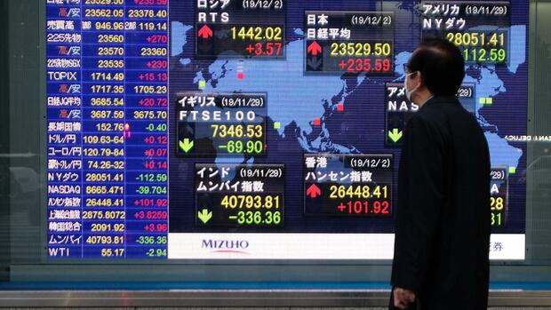

Tokyo
À l'origine, Tokyo était un petit village de pêcheurs nommé Edo (« l'estuaire »). Fortifié au xve
siècle, Edo devient la base militaire du shogun Tokugawa Ieyasu à la fin du xvie siècle, puis la capitale de
son gouvernement féodal. Durant l’époque d'Edo (1603-1868), la ville se développe et devient l'une des plus
peuplées au monde à la fin du xviiie siècle, avec une population de près d'un million d'habitants.
Dénomination de Tokyo et de ses habitants
En français, on ne prononce pas le nom de la ville comme en japonais et on écrit généralement « Tokyo
», ce
qui correspond à la prononciation française /to.kjo/. L'ancienne graphie ‹ Tokio › qui était utilisée en
français au début du xxe siècle, est toujours utilisée en allemand, en néerlandais, et en espagnol, ainsi
qu'en espéranto (entre autres). Pour la France, l'arrêté du 4 novembre 1993 relatif à la terminologie des
noms d'États et de capitales, pris conjointement par les ministres des Affaires étrangères et de l’Éducation
nationale, recommande comme seule graphie ‹ Tokyo ›. Il en va de même de la commission de toponymie de
l'Institut national de l'information géographique et forestière (IGN) et du code de rédaction
interinstitutionnel de l'Union européenne. Les Japonais eux-mêmes utilisent parfois la graphie ‹ Tokyo ›
dans leur retranscription en rōmaji du nom de la ville.
Centre de Tokyo
Par centre de Tokyo, on peut entendre les 23 arrondissements spéciaux. Dans un sens plus
restrictif,
l'expression peut désigner les dix arrondissements encerclés par la Yamanote, une importante ligne
ferroviaire circulaire : Minato, Shinagawa, Shibuya, Shinjuku, Toshima, Kita, Arakawa, Taitō, Chiyoda et
Bunkyō (le seul à n'être pas directement desservi par la ligne). Plus étroitement encore, le centre peut
faire référence aux trois arrondissements les plus centraux qui constituent le cœur historique de
l'ancienne
Edo, à savoir Chūō (dont le nom signifie d'ailleurs littéralement « centre » en japonais), Minato (le «
port
» historique, comme son nom l'indique) et Chiyoda, et les quartiers riverains du fleuve Sumida
(Nihonbashi,
Kanda, Ueno, Asakusa, Honjo, Fukagawa). Le centre de Tokyo se distingue traditionnellement en deux
parties :
Yamanote et Shitamachi.
Tout d'abord, au sud-ouest, « Yamanote »l 1 qui regroupait à la période d'Edo les résidences de
l'aristocratie autour de la résidence des shoguns au château d'Edo et qui correspond aux arrondissements
de
Shinjuku, Bunkyō, Minato et en partie à ceux de Chiyoda (autour de l'actuel palais impérial, soit le sud
de
l'arrondissement) et Chūō (« la limite ouest de l'arrondissement »). D'un autre côté, au nord-est, «
Shitamachi » désigne les anciens quartiers populaires ainsi que l'ancien pôle commercial et artisanal du
vieux Tokyo, et comprend les quartiers riverains du fleuve Sumida, à savoir ceux de Kanda (nord de
Chiyoda),
Nihonbashi et Kyōbashi (est de Chūō), Shitaya (actuel quartier d'Ueno) et Asakusa (arrondissement de
Taitō),
Honjo (ouest de Sumida) et Fukagawa (ouest de Kōtō).
Si la distinction sociale et fonctionnelle historique n'existe plus aujourd'hui, les deux termes
sont
toujours employés dans un sens géographique, voire identitaire pour les habitants des deux parties, pour
différencier le nord du sud du centre-ville. La plupart des monuments historiques de Tokyo se trouvent
dans
cette zone, notamment dans le quartier d'Asakusa, particulièrement riche en édifices religieux, dont
surtout
le temple bouddhiste Sensō-ji (dédié au Bodhisattva Kannon, il s'agit du plus ancien temple de Tokyo,
initialement construit en 645, et ancien temple tutélaire de la dynastie des shoguns Tokugawa, il fut en
partie détruit par les bombardements américains de 1945 mais reconstruit à l'identique, ses portes
monumentales, appelés Hōzōmon, sont les seuls monuments de la métropole à être classés comme Trésor
national),
les sanctuaires shinto d'Asakusa (dédié aux fondateurs du temple, l'un des plus fréquentés de la ville,
et
l'un des rares à avoir totalement survécu au tremblement de terre de 1923 et aux bombardements
américains de
1945 et datant de 1649) et le Kume no Heinai-dō (dédié à Kume no Heinai, un samouraï du xviie siècle,
détruit en 1945 mais reconstruit en 1978).
Les autres principaux monuments historiques de Tokyo sont le château d'Edo et actuel Kōkyo
(quelques
murailles et douves sont des vestiges de la forteresse originelle du xve siècle), le Zōjō-ji (temple
bouddhiste au bouddha Amida et ancien mausolée principal des shoguns Tokugawa, à Shiba dans
l'arrondissement
de Minato), la pagode à cinq niveaux du zoo d'Ueno ou encore du Nihonbashi (célèbre pont datant du xviie
siècle dans le quartier du même nom et l'arrondissement de Chūō, il marquait le point de départ du
Tōkaidō,
principale route reliant Edo à Kyoto, et qui sert toujours aujourd'hui de point 0 au kilométrage des
routes
japonaises).
Agglomération de Tokyo
Les autorités japonaises utilisent plusieurs manières pour désigner l'agglomération de Tokyo: « Une
Métropole, Trois Préfectures », plus géographique que statistique, elle comprend la préfecture
métropolitaine de Tokyo et les trois préfectures voisines que sont Chiba, Kanagawa et Saitama, soit la
moitié-sud du Kantō. Il s'agit de la définition la plus utilisée même si elle est incomplète,
puisqu'elle
comprend à sa périphérie des zones rurales, surtout dans la moitié-est de la préfecture de Chiba, tandis
que
des banlieues de la capitale japonaise sont présentes dans d'autres préfectures. la « Grande Aire
métropolitaine du Kantō », qui est une des deux définitions officielles utilisées par le Bureau des
Statistiques du Japon, et qui se rapproche de la définition française d'une aire urbaine : il s'agit de
l'ensemble des communes où au moins 1,5 % de sa population âgée de 15 ans ou plus se déplace
quotidiennement
par un mouvement pendulaire vers une des quatre villes désignées de la région (Yokohama, Kawasaki, Chiba
et
Saitama) ou vers l'un des arrondissements spéciaux de Tokyo. Au recensement de 2000, elle comptait 34,6
millions d'habitants. les « Aires kilométriques de Tokyo » est une autre définition utilisée par le
Bureau
des Statistiques, quoique moins répandue car moins fiable. Il s'agit des municipalités comprises en
totalité
ou partiellement dans des cercles concentriques de rayon croissant par paliers de 10 km, jusqu'à un
rayon
maximum de 70 km, par rapport à l'ancien siège du gouvernement métropolitain de Tokyo à Chiyoda.
Les recensements de population établissent pour Tokyo deux chiffres : celle des 70 km de rayon,
appelée Aire
des 70 km de Tokyo 7 qui est la donnée la plus large censée s'approcher le plus d'un Grand Tokyo sur un
plan
presque géométrique, et celle du rayon des 50 km de rayon, appelée Aire des 50 km de Tokyo 8 ou encore «
Aire métropolitaine majeure de Tokyo »l 9,16. Cette donnée ne comprend donc pas les nouvelles zones
périurbaines qui s'étendent au-delà en doigt de gant le long des principaux axes de communication, et
inclut
de même de nombreuses zones entièrement rurales. Elle constituait un ensemble de 31,714 millions
d'habitants
(pour le rayon de 50 km) en 2005 (30 724 311 en 2000) et de 34,394 millions (pour le rayon de 70 km) en
2000.
Économie
Tokyo est la capitale économique, commerciale et financière du pays. Les services, la finance et
l'assurance
sont les secteurs dominants. Pour son volume de transactions, la bourse de Tokyo fait partie des trois plus
importantes de la planète avec celles de Londres et de New York35. La productivité très importante de la
région place Tokyo au premier rang mondial pour ce qui est de la richesse. Le PIB total de la ville s'élève
ainsi en 2018 à 1 500 milliards de dollars, contre 1 200 milliards pour New York qui est la 2e. A titre de
comparaison, c’était le PIB de la Corée du Sud en 2017.

Pourquoi visiter Tokyo ?
La capitale du Japon est la ville la plus peuplée au monde. Tokyo est immense et offre de nombreuses
possibilités de découvertes que ce soit gustatives, culturelles ou historiques. Ses 23 arrondissements sont
arrivés à garder un esprit villageois au sein de cette mégalopole gigantesque. A n'importe quelle heure du
jour et de la nuit, vous vous sentirez en sécurité et pourrez vous balader à pied bien que les distances
soient conséquentes. Vous apprécierez certainement le quartier Shinjuku où les lumières des néons est
impressionnante. Vous passerez volontiers du temps dans les bars situés sur les toits des buildings pour
apprécier la vue sur la capitale nippone. Vous apprendrez vite à tenir vos baguettes pour déguster les
meilleurs mets japonais à base de riz et de poissons. Vous passerez aussi du temps dans les bains thermaux
(sento ou onsen). Enfin, vous n'oublierez pas de ramener des souvenirs hi-tech de cette ville très
"connectée".
Les 13 choses incontournables à faire à Tokyo